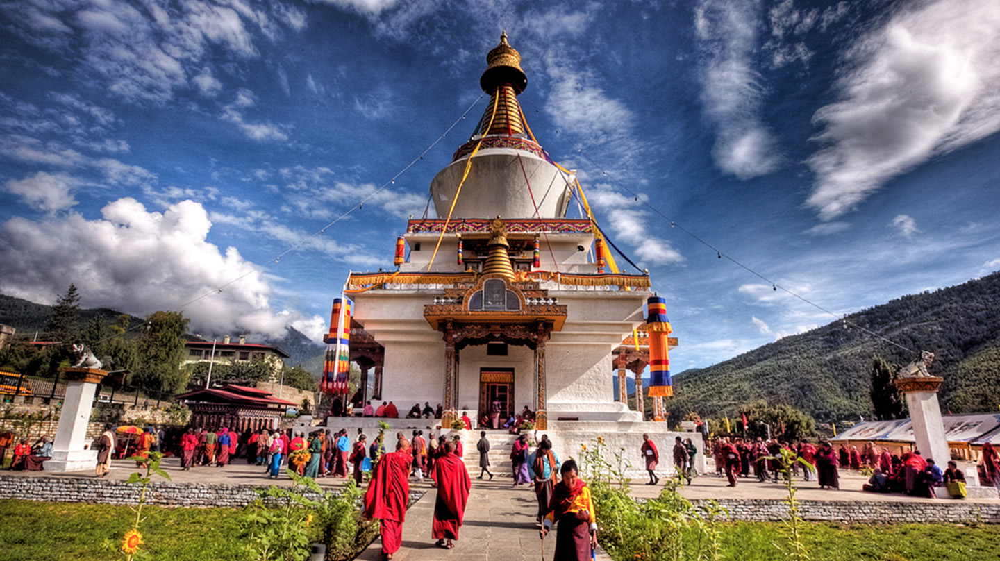
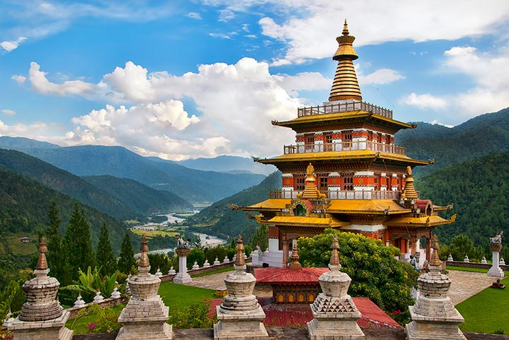
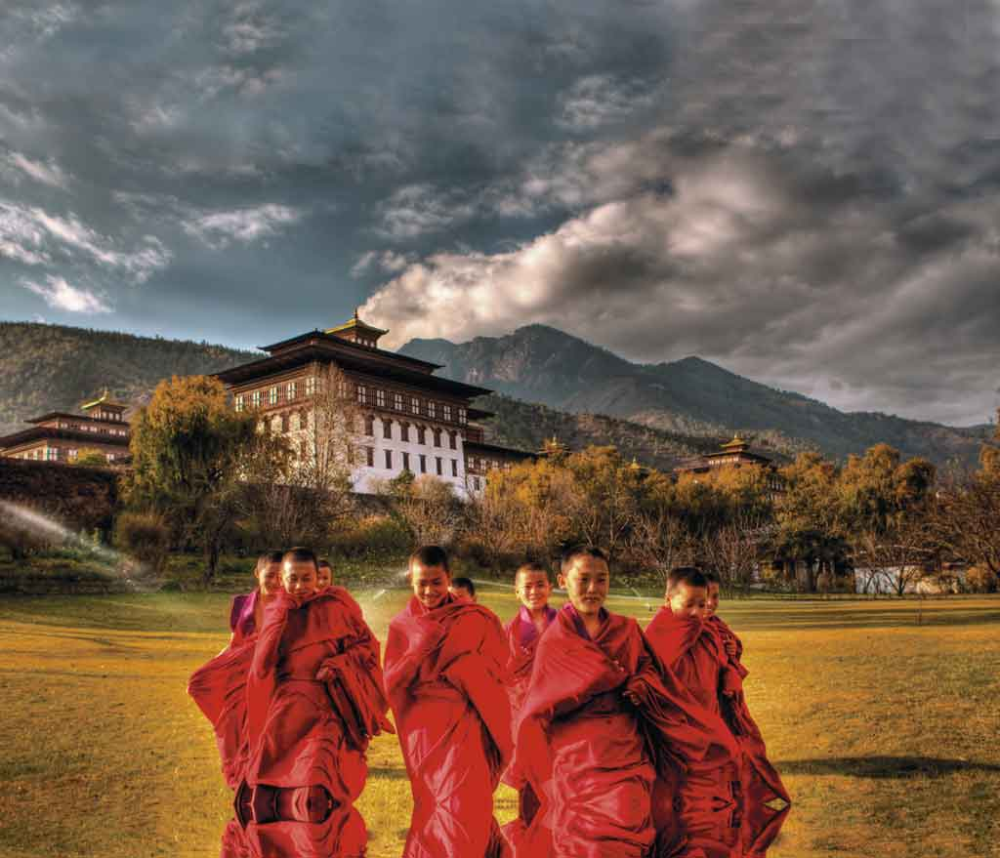
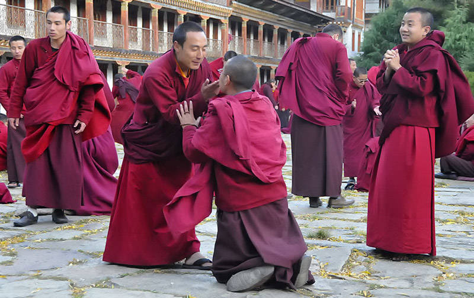
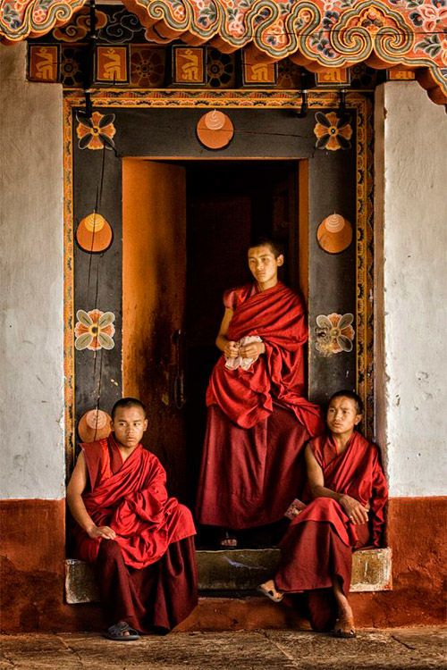
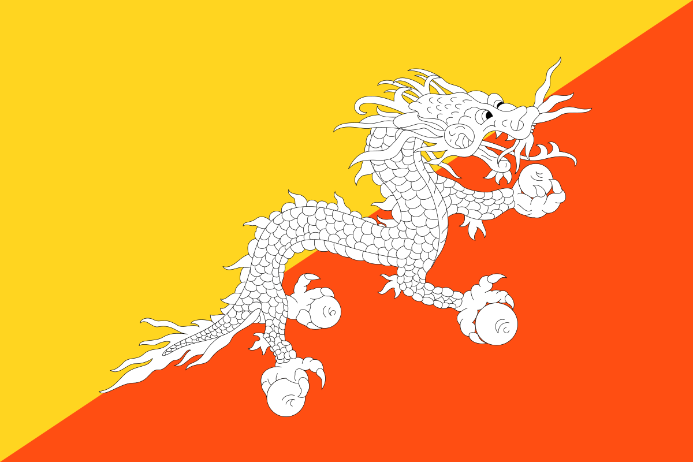

BUTAN
BU
TAN
HISTORIA
RESTAURANTES
LUGARES
¿CON QUIEN IRIA?
ITINERARIO
Bután Pais de la felicidad
El Reino de Bután alberga hermosos paisajes montañosos, bosques y selvas exuberantes, que se unen a una impresionante riqueza de templos budistas. Además, es uno de los países más felices del mundo, que conserva intacta su cultura y tradición y ofrece una amplia variedad de actividades, como trekking, rafting, kayak y rutas en bicicleta, en un entorno inolvidable y con lugares poco explorados.
Bután
Bután, un reino budista en el borde oriental del Himalaya, es famoso por sus monasterios, fortalezas (o jongs) y espectaculares paisajes que varían desde las llanuras subtropicales hasta las empinadas montañas y valles. En las zonas altas del Himalaya, las cimas como Jomolhari, a 7,326 m de altura, son destinos populares para el excursionismo. El monasterio Taktsang (también conocido como el Nido del Tigre) se aferra a los acantilados sobre el arbolado valle de Paro.
Cultura
La cultura de Bután moderna se entronca con la cultura antigua. Esta cultura influyó en el crecimiento inicial de este país. Dzongkha y Sharchop, los idiomas principales de Bután, se encuentran estrechamente relacionados con el tibetano, y los monjes de Bután leen y escriben la versión antigua del idioma tibetano llamada chhokey. Los habitantes de Bután poseen un aspecto físico similar a los tibetanos pero no existen registros históricos que confirmen que ellos cruzaron el Himalaya y se asentaron en los valles que escurren en dirección sur en Bután. Tanto los tibetanos como los butaneses rinden culto al guru tántrico Padmasambhava el fundador del Budismo del Himalaya en el siglo VIII.
Idioma
El idioma oficial y más hablado es el Dzongkha. Además se hablan otros idiomas tibetanos como el Tshangla. El Nepalí es hablado en el suroeste. El inglés es también lengua oficial aunque el porcentaje de habitantes que lo dominan no es muy alto fuera de las ciudades o círculos oficiales.





